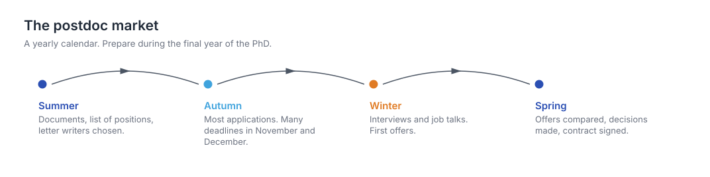

Guides · Careers
Applying for postdoctoral positions
The postdoc job market runs on a yearly calendar. Where positions are posted, what goes in the research statement, how to manage letters, and how to compare offers.
Path · Finishing and moving on · step 3 of 5
Next in this path: Collaboration and authorship →
The postdoc is the first independent step of a research career. Applications are prepared during the last year of the PhD, often while you are still writing the thesis. Start planning about eighteen months before your expected defence.
The calendar#
In mathematics and many sciences, the academic job market follows a yearly cycle, especially in North America.
- Summer, a year before the start: prepare documents and talk to your supervisor about letter writers.
- September to December: most applications. In the United States and Canada, many deadlines fall between November and early January. Some fellowships close as early as October.
- January to April: interviews and offers. Many US offers are made between late January and April.
- Europe: positions are posted throughout the year, often attached to a specific grant, with shorter and less predictable timelines.
Where positions are posted#
- MathJobs.org (run by the American Mathematical Society): the main system for academic mathematics jobs in the United States and Canada, also used by some institutions elsewhere. You create one account, upload documents once, and letter writers upload their letters there.
- AcademicJobsOnline.org: used by some institutions and fields.
- EURAXESS and national portals for Europe, and the job pages of research institutes.
- Your network: many European postdocs on a grant are filled by people the grant holder has met. Talk to researchers at conferences and tell them you are on the market.
The documents#
- Cover letter: one page, tailored to each position. Name the people you would like to work with and why.
- CV and publication list: preprints with arXiv numbers, accepted papers with journals.
- Research statement: usually two to four pages. Describe what you have done (results, in words, with their significance) and what you plan to do next. Write it for a mathematician who is not in your exact area. The plan matters as much as the past: show two or three concrete directions for the next years.
- Teaching statement: your teaching experience and how you teach, with concrete examples. Some positions also ask for evidence of teaching quality.
- Diversity or outreach statement, when requested.
- Letters of recommendation: usually three or four research letters, sometimes one teaching letter.
Letters#
Your letters are the most important part of the file. Your supervisor writes the main one. The others should come from researchers who know your work well, ideally at least one outside your own university. Build these relationships during the PhD: give talks, visit other groups, discuss your work at conferences. Ask letter writers early, give them your documents and the list of deadlines, and remind them politely.
Interviews and talks#
You may be asked for a video interview or a job talk. Prepare a talk that a general audience in your department can follow for the first part (see Giving a research talk). Prepare short answers to common questions: what is your most important result, what will you work on next, why this place.
Comparing offers#
- The research environment: who you will work with, seminars, other postdocs.
- The length of the contract and the teaching load.
- The salary compared with the cost of living, and benefits.
- The freedom to choose your own research.
- What former postdocs of the group do now.
It is acceptable to ask for a short delay before answering an offer if you are waiting for another one. Be honest and polite.
Checklist#
- I know the calendar of the markets I apply to.
- My MathJobs or equivalent account is ready, with all documents uploaded.
- My research statement presents past results and a concrete plan.
- My letter writers know my work and have the list of deadlines.
- Each cover letter names the people I want to work with.
Discussion
Questions, corrections and your own experience are welcome. Comments live in the forum, on GitHub Discussions, with Markdown and LaTeX.